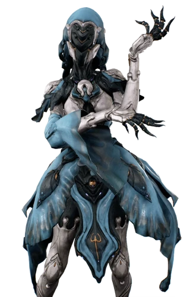

|  | |||
| Abilities | |||
|---|---|---|---|
| Ability 1 | Sea Snares | ||
| Ability 2 | Merulina | ||
| Ability 3 | Aquablades | ||
| Ability 4 | Riptide | ||
| Passive Ability | |||
| Yareli gains +200% Critical Chance for Secondary weapons when she has been moving for at least 1.5s. | |||
| Character Profile | |||
| Gender | Female | ||
| Default HP | 100 (300 at Rank 30) | ||
| Default Shields | 150 (450 at Rank 30) | ||
| Armor | 100 | ||
| Default Energy | 200 (300 at Rank 30) | ||
| Starting Energy | 50 | ||
| Sprint Speed | 1 | ||
Lore
Yareli was the savior of children who were enslaved by a slave-driver named Vulgran. The rescue inspired the
children to rise up against their slaver before she blasted him into the sky. Her tale is passed down
through a comic Graphica dubbed Waverider #1.
Yareli also served as the originator of K-Driving and inspired the Ventkids to follow in her footsteps.